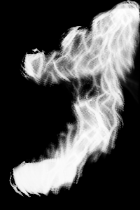

Abstract
Recent advances in computing have allowed for the development of high fidelity fluid simulators such as MantaFlow [1] and FLIP Fluids [2]. However, although these simulators are capable of achieving realistic movement of fluids, they still lack the ability to easily artistically control them. We define “artistic control” of a fluid as the ability to achieve a desired target configuration (in a single rendered frame) or flow (over multiple frames) of the fluid. This is particularly important in the fields of animation and design for fluids such as water and even air. Furthermore, certain fluids can be harder to simulate and thus even harder to artistically control. The converse is true in that there are particular fluids that are intrinsically simple and thus easier to both simulate and artistically control. One promising avenue of research has been artistically controlling a simpler base fluid and then transferring the style of a more complex target fluid onto that base to mimic it. The drawback of this method is that the “style transfer” must adhere to some combination of the physical properties of both the base and target fluids. Initial work focused on developing complex physical models to achieve this transfer. With the recent advent of deep learning and neural networks with high representational power, recent work has shifted to learning deep learning models that can learn this transfer in the fluid domain, similar to the approach by Gatys et al. [3] for paintings. We first implement the approach outlined for smoke simulation style transfer by Kim et al. [4] and apply it to multiple wave textures to simulate ocean renderings. From this proof of concept, we extend the implementation to other simulated fluids by writing a few FLIP-based simulations in the MantaFlow library ranging from a simple wave to a complex ball-drop. The drawback of the approach used by Kim et al. is that it requires an online optimization phase that is slow and computationally expensive. We instead propose a single-shot approach operating solely in the image space (Kim et al.’s approach operates on the raw density and velocity fields) that uses a generative model trained on triplets of input textures, input density renderings, and stylized output density renderings produced by Kim’s approach that is ~1830x faster and can enable real-time fluid style transfer.
Methodology
Implementing and Extending Neural Style Transfer for Smoke
Implementation
We first implement the approach used by Kim et al. for neural style transfer of smoke simulations. The MantaFlow fluid simulator is used to render discretized cross-sectional frames of a 3D smoke simulation as density and velocity vectors. These along with the desired target texture in JPG format are the inputs to the algorithm. The output is the corresponding density for the stylized frame. In their approach, Kim et al. use the pre-trained Inception-5h/V1 [5] network for feature extraction and optimize an online style transfer loss at inference time that utilizes the input velocity vectors as an extra constraint as opposed to earlier methods that operate solely on the static density of the input. This is their “transport-based” approach. However, their iterative optimization method is computationally intensive and takes several minutes to stylize a single frame. All experiments were performed on an Nvidia DGX-1 server with 8x Tesla V100 graphics cards and dual Intel Xeon E5-2698 v4 CPUs @ 2.20GHz. Optimization was performed on a single GPU. It was clear that this approach would not scale in real-time graphics applications.
Extension to Waves
With a working implementation of Kim et al.’s approach, we decided to see if we could transfer the style of ocean waves onto the smoke simulation in both single and consecutive frame settings. The results are below. Although we see surprisingly good performance on certain inputs, we also see that there are cases where the implementation does not faithfully transfer the target texture. In one instance, the bottom-left to top-right gradient in the input texture is not reproduced across the stylized image, and we instead see multiple gradients, some even in the opposite direction. This could potentially be attributed to the nature of the smoke simulation itself, which tends to move outwards in all directions like a sparse gas instead of in a single focused direction like a liquid wave would.
Extension to Generic Fluids
In an attempt to better model fluids such as water, we extended Kim et al.’s approach to generic fluids by writing a few simulations in MantaFLOW using a FLIP-based simulator. The simulations range from a simple 2D cross-sectional wave to a 3D wave and ball dropping into a fluid. We then pass cross-sections of the simulations into the neural style transfer algorithm as before, but instead use pressure instead of density. To do so, we also attempted to modify the differentiable portion of the optimization process for pressure, which should have been fairly straightforward since it is proportional to density. To our dismay, the optimization diverged every time and resulted in large uniform density outputs. We tried debugging this for a bit, but could not trace down the bug and instead chose to move forward with our single-shot approach in the interest of time.
Novel Single-shot Approach
In our earlier experiments, we found that the online iterative optimization used by Kim et al. is extremely computationally intensive and takes several minutes on a single frame even with high-performance computational resources. Furthermore, it operates in the density and velocity vector-space which contains richer information but is also computationally expensive to work in. Instead, we propose using a single-shot approach that operates solely in the image space consisting of a generative model that takes an input texture + density rendering pair and produces a stylized output density rendering. The training data for this approach can be generated from Kim et al.’s approach. Thus our dataset generation time is long, but our inference time is quick and consists of a single forward pass of the generative model.

|
||
|  | ||
Generative Model
We use a Generative Adversarial Network (GAN) [6], which is a generative latent variable model in which two neural networks, the generator and discriminator, play a zero-sum minimax game. The typical loss function for a GAN is as follows:
The generator maps a latent space to the image space, meaning that it tries to produce a fake image. The discriminator takes in an image, either from the real data or fake generated data, and attempts to classify the image as real or fake. The discriminator tries to maximize the binary cross-entropy loss while the generator adversarially tries to minimize the loss.
Unfortunately, GANs are notoriously hard to train and suffer from mode collapse, discriminator saturation, and extreme hyperparameter sensitivity. Furthermore, unlike autoencoders, basic GANs are incapable of encoding style into a latent space.
WGAN-GP
We first explored the Wasserstein GAN with Gradient Penalty (WGAN-GP) [7] as a way to fix discriminator saturation and hyperparameter sensitivity. The loss function for the GAN indirectly optimizes the KL divergence between the generator and real data distribution versus the average of both distributions:

|
However, KL divergence is not necessarily the best distance metric. This paper proposes to use the Wasserstein distance metric instead. After some math, the loss function is:

|
The discriminator, instead of predicting the log probability, predicts a value. This is equivalent to the “value” function in a reinforcement learning setting and hence the first term is called the "critic objective". The second term enforces that the discriminator is at least 1-lipschitz to ensure easier and more stable optimization of the Wasserstein objective. We have a working version of WGAN-GP and have successfully trained it on CIFAR-10.
BiGAN
We also explored the Bidirectional GAN (BiGAN) [8] as a way for GANs to encode images into a latent space, similar to other latent-variable models. BiGAN adds in another neural network, in particular, the encoder. The loss function is identical to standard GANS, except that the discriminator takes in both the image and random noise, which either comes from the generator input (fake image) or the output of an encoder (real image). We have a working version of BiGAN and have successfully trained it on a toy MNIST example.
We later realized that style does not necessarily have to be encoded into a latent space and explored an alternative that conditions on style. However, BiGAN can still be an effective tool for style transfer.
Pix2Pix with Wasserstein Objective
Pix2Pix [9] is a minor modification of a standard GAN. A Pix2Pix is a type of condition GAN, which means that the discriminator conditions on contextual information to determine if an image is real or fake. In our case, the discriminator conditions on the original texture and sees if the generated image of the smoke follows the texture provided. We follow the Wasserstein variant of the Pix2Pix loss function (meaning that discriminator outputs values, not probabilities, and the Gradient Penalty is used).
We ended up using this as our final generative model for style transfer as it performed best in initial experiments on a small dataset.
Results
Although our single-shot Pix2Pix generative model takes approximately 8 hours to train on two Tesla V100 GPUs, a single forward pass on one GPU is on the order of 140ms. Compared to a single optimization pass of Kim et al.’s implementation which takes on average 4.27 minutes, this is a speedup of ~1830x.
Future Work
In future work, we would like to fix the bug in our pressure implementation of Kim et al.’s approach and see how it performs on our custom fluid simulations. We can then train our single-shot generative model on this data. We would also like to experiment with providing the model with multiple frames at once for style transfer of consecutive simulation frames. Both Kim et al.’s approach and ours stylize multiple consecutive frames independently. The rationale behind stylizing them all at once is that there is richer cross-frame contextual data that can be used, potentially with an attention-based model.
References
[1] http://mantaflow.com/
[2] https://flipfluids.com/
[3] Gatys, Leon A., Alexander S. Ecker, and Matthias Bethge. "A neural algorithm of artistic style." arXiv preprint arXiv:1508.06576 (2015).
[4] Kim, Byungsoo, et al. "Transport-based neural style transfer for smoke simulations." arXiv preprint arXiv:1905.07442 (2019).
[5] Szegedy, Christian, et al. "Going deeper with convolutions." Proceedings of the IEEE conference on computer vision and pattern recognition. 2015.
[6] Goodfellow, Ian, et al. "Generative adversarial nets." Advances in neural information processing systems. 2014.
[7] Gulrajani, Ishaan, et al. "Improved training of wasserstein gans." Advances in neural information processing systems. 2017.
[8] Donahue, Jeff, Philipp Krähenbühl, and Trevor Darrell. "Adversarial feature learning." arXiv preprint arXiv:1605.09782 (2016).
[9] Isola, Phillip, et al. "Image-to-image translation with conditional adversarial networks." Proceedings of the IEEE conference on computer vision and pattern recognition. 2017.
Contributions
Michael Luo - Helped write the generative model and report.
Vishal Satish - Helped with the initial implementation of Kim et al.’s work, the fluid extensions in MantaFlow, and the report.
Vincent Wang - Helped with collecting training textures, generating training data, and the report.